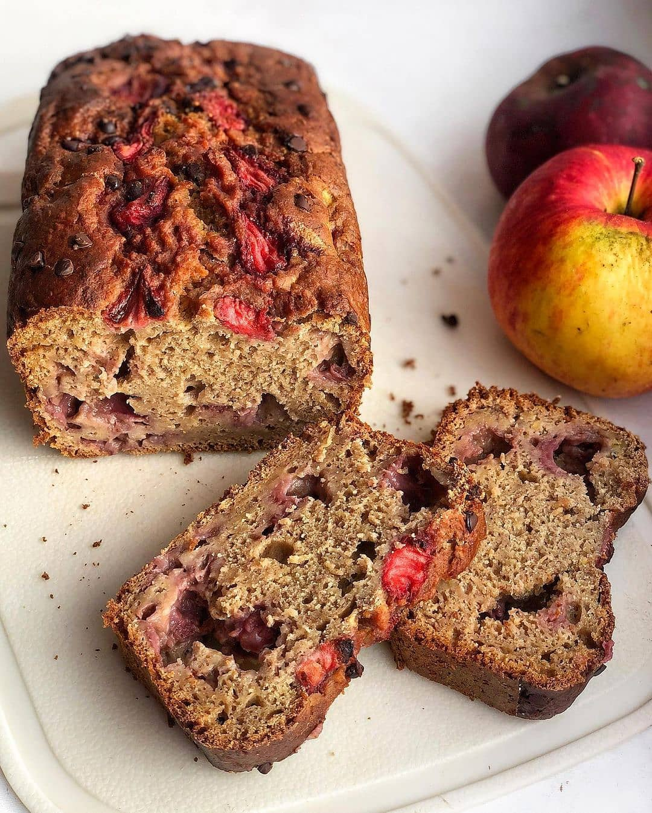

Ovocný chlebíček podľa @biocare_sk — Normy Jedál
Ovocný koláčik z ovsenej múky 👌❤
Posted @withregram • @rommiemax •
Rýchly ovocný chlebík vonia ako taký snickerdoodle🤤 banán, jablko, jahody mňam
225g banány 2,5ks
1 menšie jablko očistené 65g
2 vajcia
30g biely jogurt
70g med
220g ovsená múka hladka j.vince @biocare_sk
1čl pdp 1/4čl jedla soda
Štipka soli
1 čl škorice
Jahody mrazene
horká čokoláda kvapky @biocare_sk
Jablko nastrúhať na hrubo zmiešať s ostatnými surovinami na koniec nakrájané jahody a piecť v chlebovej forme na 180’C 1h 5-10min.
Do konca februára ešte platí kód Rommiemax na 5% zľavu
#fruitloaf #ovocnychlebicek #bananovychlebicek #bananabread #foodlover #foodies #nebickovpapulke #mojerano #mojeranajky #recepty #rommiemaxrecepty